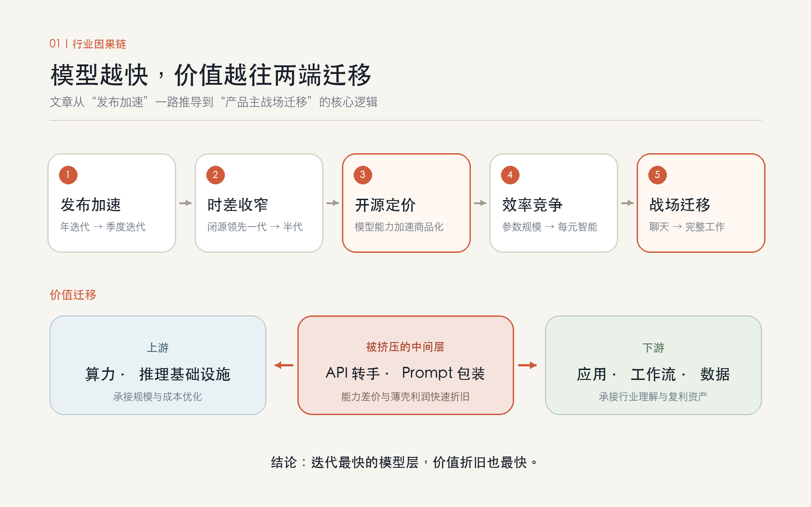
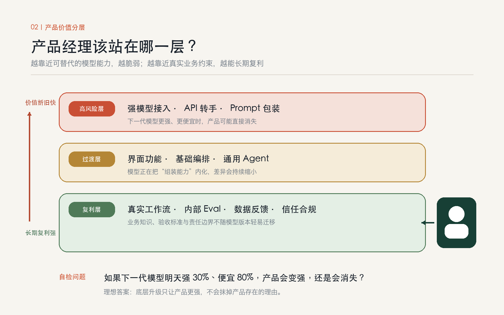
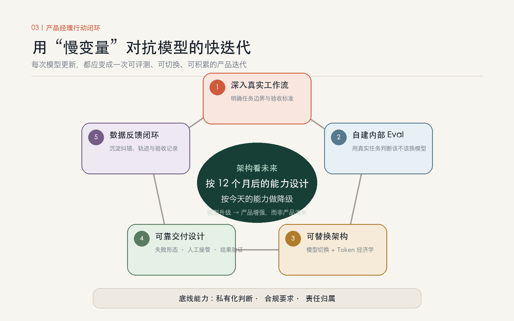

模型每周都在更新，产品经理该站在哪一层
最近追模型发布，我有点跟不上了。本来只想记一笔 Kimi K3 开源，写着写着发现 K3 强不强反而是次要的，它出现的时间点，以及这个时间点透露出来的行业变化，才是我真正想弄明白的。
下面是我把这两个月的事捋了一遍之后的想法，主要是在回答自己一个问题：做产品的人，接下来该把力气花在哪。
一、把这两个月的事摆在一起看
一个一个看，这些发布都算不上惊人。放在同一条时间线上，感觉就不太一样。
OpenAI 的 GPT-5.6 是 6 月 26 日开的限量预览，7 月 9 日全量放开，分 Sol、Terra、Luna 三档。7 月 30 日，Luna 降价 80%，Terra 降价 20%。从正式上线到大幅降价，中间不到三周。
DeepSeek 更早。4 月 24 日就开源了 V4 系列的预览版权重，其中 V4-Flash 是 284B 总参数、13B 激活参数的配置。7 月 31 日，V4-Flash 正式版 API 开始公测。官方说得很直白：模型结构和尺寸都没变，只是重新做了一遍后训练，改的主要是代码修改、工具调用和多步骤任务执行这些能力。
月之暗面的 Kimi K3 发布在 7 月 17 日，2.8 万亿参数，100 万 token 上下文，896 个专家、每次推理只激活 16 个。十天之后，7 月 27 日，权重开源。
三家公司，两个月，五次动作，而这还只是被讨论得最多的三家。有统计说 2026 年 1 月到 6 月，全球发布的前沿及开源模型超过 50 款，平均每个月接近 10 个，比 2023 一整年加起来都多。
二、这个速度跟以前比，快在哪
要判断快到什么程度，得有个参照。2023 年 GPT-4 出来之后，开源社区想追到接近的水平，普遍需要一年以上。那时候大家默认闭源领先一代，开源做的是便宜替代品，两边不在一个层次上讨论。
现在的口径变了。OpenRouter 今年年中给出的判断是，开源和闭源的差距只剩 3 到 6 个月；Epoch AI 保守一些，说是 3 到 12 个月。取哪个数其实不重要，方向是一样的：过去要用年来算的代际间隔，现在按季度算就够了，开源和闭源的时差也从落后一代收窄到了半代左右。
还有一层变化容易被忽略：变快的不只是模型，是整条链路。DeepSeek 那次更新结构没动、参数没动，光重做后训练就能明显改善 Agent 能力，说明后训练的迭代周期已经短到可以单独发一个版本。K3 从发布到开源权重只隔了十天，说明开源已经不是想通了才做的决定，是提前排进日程表的一个动作。
三、K3 开源，我更愿意当成一次定价行为
把它解读成技术自信或者情怀，我觉得都没说到点上。
一个 2.8 万亿参数、能力接近第一梯队的模型被免费放出来，最直接的后果不是所有人都用上了好模型，而是同一能力档位上的闭源定价，天花板被按住了。你很难再跟一个开发者说这个水平的模型就值这个价，因为他随时可以去下载权重自己跑。
GPT-5.6 Luna 降价 80% 跟这件事有没有直接因果，我不敢说，时间上也未必对得上。但模型层的定价空间在被持续挤压，这个趋势是清楚的。
所以开源在今天更接近一种竞争手段：把对手最赚钱的那一层变成公共品，自己去赚上下游的钱。往上是算力和推理基础设施，往下是应用、工作流和数据。中间那一层的钱，在往两头流。
对做产品的人来说，这个结论不太好听。最先被碾掉的，是只做 API 转手、prompt 包装、把模型能力换个界面卖出去的那批中间层产品。他们的利润来源，恰好就是正在被开源掏空的那一段。
四、现在比的是同样一块钱能换多少智能
K3 是 896 选 16 的稀疏度，DeepSeek 是 284B 总参数配 13B 激活，OpenAI 在 GPT-5.6 的发布材料里反复讲的是用更少的 token 完成同样的任务。三条完全不同的技术路径，指向的是同一件事：规模本身已经不太构成卖点了，效率才是。
2.8 万亿参数听起来吓人，但它每次推理激活的部分不到 2%。这个数字真正在说的，是它能在更低的成本上撑起更高的上限。
换算到产品上大概就是：你今天觉得贵到做不了的功能，一年后很可能便宜到不值得单独收费。
五、更麻烦的是，主战场已经不是对话了
看这三家最新一轮更新在改什么。DeepSeek 改的是工具调用和多步骤任务执行；OpenAI 主推 Codex 和 ChatGPT Work，把模型直接送进工作场景；Kimi K3 的官方定位是长程编程和知识工作。
没有一家在强调自己聊天更自然了。它们抢的是同一件事：替人做完一整段完整的工作。
而这件事原本是应用层的地盘。过去做产品，我们干的是把模型的原子能力组装成一个能干活的流程，组装的那部分就是我们的价值。现在模型把组装能力自己内化了，我们还剩多少价值，这个问题我暂时没有很确定的答案。

六、跑分在加速，落地没有
DeepSeek 这次公布的 Terminal Bench 2.1 得分 82.7，看着挺唬人。但去翻官方注释会发现，这个成绩是在自家即将发布的 Harness 极简模式下、开到 max 档位、用特定采样参数跑出来的，另外几项用的还是内部测试集。我不是说数据造假，只是这类分数能告诉你的信息很有限：模型在那套设定下变强了，仅此而已。
它说明不了的是，接到你自己的代码库里会不会读错、工具调用稳不稳定、改完能不能自己跑测试、失败之后会不会带着证据继续往下找。
公开榜单已经通胀得很厉害。更要紧的是，企业的采纳速度、组织流程的改造速度，远远跟不上模型的发布速度。模型每季度进化一次，可一家公司要把一个 Agent 真嵌进业务流程、跑通验收、说服中层、把责任归属谈明白，半年都算快的。
这个落差，就是应用层现在比较实在的机会。
七、产品经理该往哪儿站
行业、公司阶段、手上的资源都不一样，我给不出通用答案，只能把自己想清楚的那部分写下来。先说我认为该放弃的。
一个是把模型能力当护城河。「我们效果好，是因为接了更强的模型」这种话，保质期大概三个月，上面那条时间线已经把结论摆在那儿了。
一个是薄壳产品。这里有个自检问题我觉得挺好用：如果下一代模型明天上线，比现在强 30%、便宜 80%，我的产品是变强，还是直接消失？答案要是消失，说明产品价值建立在弥补当前模型的缺陷上，比如帮它做长文切分、帮它修格式、帮它做多轮引导。这类东西，下一代模型顺手就抹掉了。

还有一个是拿今天模型的上限去设计产品的天花板。比较合理的做法是按十二个月后的能力设计架构，按今天的能力设计降级方案。
再说该积累的，按我自己判断的优先级排。
自建评测集排第一。这是我认为产品经理现在最值钱、也最该亲自主导的一件事。公开榜单失效之后，用户到底满不满意这个问题，只能靠你自己的真实任务集来回答。一套覆盖真实场景、有明确验收标准的内部 Eval，能让你在 K3.1 或者 V4-Pro 正式版发布的当天，一小时内给出该不该换的结论。这东西竞争对手也抄不走，它长在你的业务里。
然后是把架构做成模型可替换的，同时真的去搞懂 token 经济学。换模型应该是一次配置变更，不是一次重写。输入输出的定价差、缓存命中率、思考模式带来的成本弹性各自意味着什么，你得心里有数。一个 Agent 跑一次要花多少钱，直接决定了它能不能做成订阅制。
第三件是从功能产品经理转向工作流产品经理。Agent 产品的核心设计问题从来不在界面上，而在任务边界划在哪、失败长什么样、人在哪个环节接管、交付物怎么被验证。你的稀缺性来自对某个具体行业真实工作流的理解，模型公司不知道一个保险理赔员的第七步在干什么，你知道。
第四是守住数据和反馈闭环。模型正在变成公共品，但用户在你产品里留下的真实操作轨迹、纠错信号、验收记录不是。这是少数会随时间增值的东西。
最后补一条私有化和合规的判断力。K3、V4 这批开源模型，让高能力加本地部署第一次成为一个现实选项。在金融、医疗、政企这些场景里，能私有化本身就是产品卖点，而这需要你判断得了部署成本和能力取舍之间怎么权衡。

最后
这些串起来，我自己得到的判断大概是：迭代最快的那一层，价值掉得也最快；迭代慢的那些东西，反而越来越值钱。
上游的模型能力在飞速商品化，你不该也不太可能在那里竞争。下游的行业理解、信任关系、责任归属、流程改造，变得极慢，慢到模型翻几代都撼不动，复利在那一边。
所以我现在更想把注意力从「这周又发了什么新模型」，挪到「我那套评测集还测不测得准」「我这个产品换掉底层模型要几天」这类问题上。前者每周都有新的，看着热闹，看完手上什么也没多；后者枯燥，但确实在攒东西。
模型会继续以季度为单位往前跑，这个停不下来。我们能做的，是别站在会被它顺手带走的那一层。